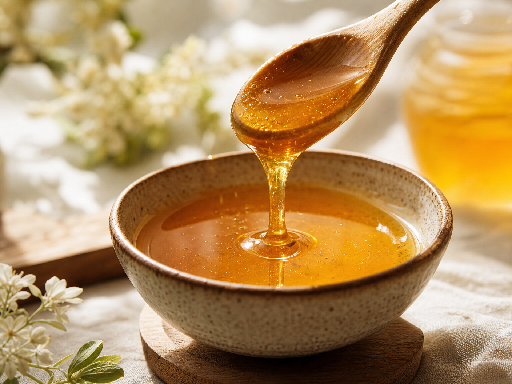
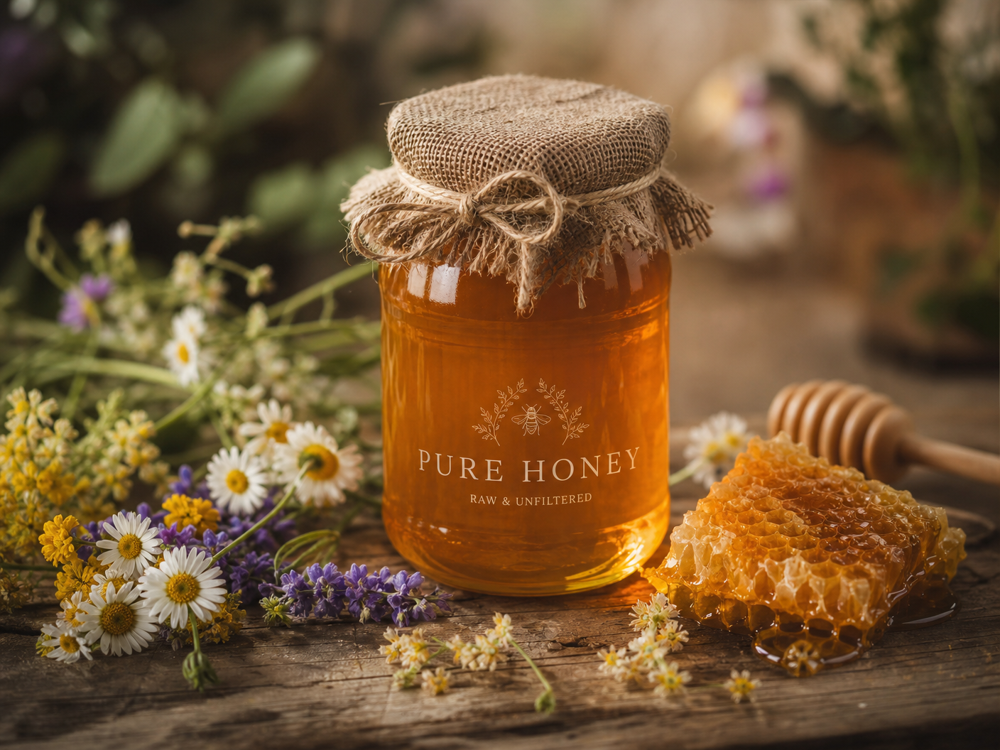

Starodávny "zlatý rituál", ktorý mení pohľad na mentálnu sviežosť
Objavte, prečo sa slovenskí seniori vracajú k tradícii, ktorú moderná veda začína opäť uznávať.

ZISTIŤ VIAC TUNa Slovensku sa v posledných mesiacoch šíri tichý fenomén. Nejde o žiadnu novú technológiu, ale o návrat k čistote prírody. Reč je o "tekutom zlate", ktoré máme mnohí v špajzi, no málokto vie, ako ho správne využiť pre podporu svojej vitality.
Odborníci na výživu si všimli, že špecifický spôsob konzumácie tohto prírodného daru môže mať prekvapivý vplyv na to, ako sa cítime počas dňa. Tento mechanizmus nie je o kvantite, ale o kvalite a správnom načasovaní, ktoré pomáha udržiavať myseľ v bdelom stave.

Prečo je tento rituál taký dôležitý práve po 60-tke? S pribúdajúcim vekom naše telo hľadá spôsoby, ako si udržať rovnováhu. Tento prírodný mechanizmus ponúka jemnú, ale účinnú cestu, ako podporiť koncentráciu bez zbytočných chemických prísad.
Krátka video prezentácia, ktorá sa stala hitom na sociálnych sieťach, odhaľuje presný postup tohto rituálu. Vysvetľuje, prečo je tento konkrétny typ prírodného extraktu taký výnimočný a ako ho môžete zaradiť do svojho rána už zajtra.